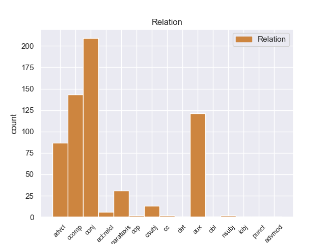
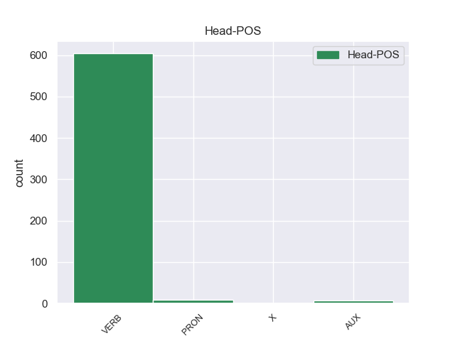
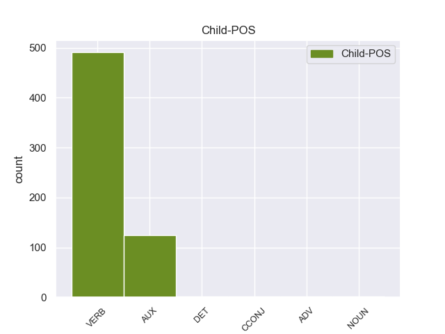

Distribution of features within this leaf



Agreement Rules sorted by frequency.
When the dependent token is None
1 Ευελπιστώ _ _ _ _ 0 _ _ _
2 ότι _ _ _ _ 0 _ _ _
3 η _ _ _ _ 0 _ _ _
4 απόφαση _ _ _ _ 0 _ _ _
5 αυτή _ _ _ _ 0 _ _ _
6 , _ _ _ _ 0 _ _ _
7 συμπεριλαμβανομένης _ _ _ _ 0 _ _ _
8 και _ _ _ _ 0 _ _ _
9 της _ _ _ _ 0 _ _ _
10 αιτιολογικής _ _ _ _ 0 _ _ _
11 έκθεσης _ _ _ _ 0 _ _ _
12 που _ _ _ _ 0 _ _ _
13 την _ _ _ _ 0 _ _ _
14 συνοδεύει _ _ _ _ 0 _ _ _
15 , _ _ _ _ 0 _ _ _
16 θα _ _ _ _ 0 _ _ _
17 διαβιβαστεί διαβιβαστr VERB _ Mood=Ind|Number=Sing|Person=3|Tense=Pres|VerbForm=Fin 0 _ _ _
18 σ _ _ _ _ 0 _ _ _
19 τις _ _ _ _ 0 _ _ _
20 γαλλικές _ _ _ _ 0 _ _ _
21 αρχές _ _ _ _ 0 _ _ _
22 , _ _ _ _ 0 _ _ _
23 εφόσον _ _ _ _ 0 _ _ _
24 υπερψηφιστεί υπερψηφιστr VERB _ Mood=Ind|Number=Sing|Person=3|Tense=Imp|VerbForm=Fin 17 advcl _ _
25 από _ _ _ _ 0 _ _ _
26 το _ _ _ _ 0 _ _ _
27 Κοινοβούλιο _ _ _ _ 0 _ _ _
28 . _ _ _ _ 0 _ _ _
When the dependent token is None and the dependent token is AUX.
1 Ευελπιστώ _ _ _ _ 0 _ _ _
2 ότι _ _ _ _ 0 _ _ _
3 η _ _ _ _ 0 _ _ _
4 απόφαση _ _ _ _ 0 _ _ _
5 αυτή _ _ _ _ 0 _ _ _
6 , _ _ _ _ 0 _ _ _
7 συμπεριλαμβανομένης _ _ _ _ 0 _ _ _
8 και _ _ _ _ 0 _ _ _
9 της _ _ _ _ 0 _ _ _
10 αιτιολογικής _ _ _ _ 0 _ _ _
11 έκθεσης _ _ _ _ 0 _ _ _
12 που _ _ _ _ 0 _ _ _
13 την _ _ _ _ 0 _ _ _
14 συνοδεύει _ _ _ _ 0 _ _ _
15 , _ _ _ _ 0 _ _ _
16 θα er AUX _ Mood=Cnd|Number=Sing|Person=3|VerbForm=Fin 17 aux _ _
17 διαβιβαστεί διαβιβαστr VERB _ Mood=Ind|Number=Sing|Person=3|Tense=Pres|VerbForm=Fin 0 _ _ _
18 σ _ _ _ _ 0 _ _ _
19 τις _ _ _ _ 0 _ _ _
20 γαλλικές _ _ _ _ 0 _ _ _
21 αρχές _ _ _ _ 0 _ _ _
22 , _ _ _ _ 0 _ _ _
23 εφόσον _ _ _ _ 0 _ _ _
24 υπερψηφιστεί _ _ _ _ 0 _ _ _
25 από _ _ _ _ 0 _ _ _
26 το _ _ _ _ 0 _ _ _
27 Κοινοβούλιο _ _ _ _ 0 _ _ _
28 . _ _ _ _ 0 _ _ _
When the dependent token is None and the dependent token is AUX. and the dependent token is ADV.
1 Πρόκειται _ _ _ _ 0 _ _ _
2 για _ _ _ _ 0 _ _ _
3 ένα _ _ _ _ 0 _ _ _
4 μεγάλο _ _ _ _ 0 _ _ _
5 επίτευγμα _ _ _ _ 0 _ _ _
6 σχετικά _ _ _ _ 0 _ _ _
7 με _ _ _ _ 0 _ _ _
8 την _ _ _ _ 0 _ _ _
9 οδική _ _ _ _ 0 _ _ _
10 ασφάλεια _ _ _ _ 0 _ _ _
11 , _ _ _ _ 0 _ _ _
12 δεδομένου _ _ _ _ 0 _ _ _
13 ότι _ _ _ _ 0 _ _ _
14 η _ _ _ _ 0 _ _ _
15 κούραση _ _ _ _ 0 _ _ _
16 προφανώς _ _ _ _ 0 _ _ _
17 επηρεάζει _ _ _ _ 0 _ _ _
18 όλους _ _ _ _ 0 _ _ _
19 τους _ _ _ _ 0 _ _ _
20 οδηγούς _ _ _ _ 0 _ _ _
21 με _ _ _ _ 0 _ _ _
22 τον _ _ _ _ 0 _ _ _
23 ίδιο _ _ _ _ 0 _ _ _
24 τρόπο _ _ _ _ 0 _ _ _
25 , _ _ _ _ 0 _ _ _
26 είτε _ _ _ _ 0 _ _ _
27 εργάζονται εργάζονταr VERB _ Mood=Ind|Number=Plur|Person=3|Tense=Pres|VerbForm=Fin 0 _ _ _
28 σε _ _ _ _ 0 _ _ _
29 επιχείρηση _ _ _ _ 0 _ _ _
30 είτε _ _ _ _ 0 _ _ _
31 αυτοαπασχολούνται αυτοαπασχολούντα ADV _ Mood=Ind|Number=Plur|Person=3|Tense=Past|VerbForm=Fin 27 conj _ _
32 . _ _ _ _ 0 _ _ _
When the dependent token is None and the dependent token is AUX. and the dependent token is ADV. and the dependent token is DET.
1 Abrazo _ _ _ _ 0 _ _ _
2 era _ _ _ _ 0 _ _ _
3 voz _ _ _ _ 0 _ _ _
4 muy _ _ _ _ 0 _ _ _
5 usada _ _ _ _ 0 _ _ _
6 en _ _ _ _ 0 _ _ _
7 las _ _ _ _ 0 _ _ _
8 ceremonias _ _ _ _ 0 _ _ _
9 de _ _ _ _ 0 _ _ _
10 caballería _ _ _ _ 0 _ _ _
11 , _ _ _ _ 0 _ _ _
12 en _ _ _ _ 0 _ _ _
13 que _ _ _ _ 0 _ _ _
14 el _ _ _ _ 0 _ _ _
15 recién _ _ _ _ 0 _ _ _
16 armado _ _ _ _ 0 _ _ _
17 recibía _ _ _ _ 0 _ _ _
18 : _ _ _ _ 0 _ _ _
19 l' l' DET _ Number=Sing|Person=3|PronType=Ind 20 det _ SpaceAfter=No
20 accolade accoladir X _ Number=Sing|Person=3 0 _ _ _
21 , _ _ _ _ 0 _ _ _
22 en _ _ _ _ 0 _ _ _
23 francés _ _ _ _ 0 _ _ _
24 . _ _ _ _ 0 _ _ _
When the dependent token is None and the dependent token is AUX. and the dependent token is ADV. and the dependent token is DET. and the dependent token is CCONJ.
1 Ο _ _ _ _ 0 _ _ _
2 Υπουργός _ _ _ _ 0 _ _ _
3 Άμυνας _ _ _ _ 0 _ _ _
4 της _ _ _ _ 0 _ _ _
5 Γαλλίας _ _ _ _ 0 _ _ _
6 , _ _ _ _ 0 _ _ _
7 Ζαν _ _ _ _ 0 _ _ _
8 Υβ _ _ _ _ 0 _ _ _
9 Λε _ _ _ _ 0 _ _ _
10 Ντριαν _ _ _ _ 0 _ _ _
11 , _ _ _ _ 0 _ _ _
12 δήλωσε _ _ _ _ 0 _ _ _
13 ότι _ _ _ _ 0 _ _ _
14 " _ _ _ _ 0 _ _ _
15 1400 _ _ _ _ 0 _ _ _
16 στρατιώτες _ _ _ _ 0 _ _ _
17 από _ _ _ _ 0 _ _ _
18 τη _ _ _ _ 0 _ _ _
19 Γαλλία _ _ _ _ 0 _ _ _
20 βρίσκονται _ _ _ _ 0 _ _ _
21 σ _ _ _ _ 0 _ _ _
22 το _ _ _ _ 0 _ _ _
23 Μάλι _ _ _ _ 0 _ _ _
24 " _ _ _ _ 0 _ _ _
25 και _ _ _ _ 0 _ _ _
26 πρόσθεσε _ _ _ _ 0 _ _ _
27 ότι _ _ _ _ 0 _ _ _
28 " _ _ _ _ 0 _ _ _
29 η _ _ _ _ 0 _ _ _
30 Γαλλία _ _ _ _ 0 _ _ _
31 σκοπεύει _ _ _ _ 0 _ _ _
32 να _ _ _ _ 0 _ _ _
33 στείλει _ _ _ _ 0 _ _ _
34 μέχρι _ _ _ _ 0 _ _ _
35 και _ _ _ _ 0 _ _ _
36 2500 _ _ _ _ 0 _ _ _
37 στρατιώτες _ _ _ _ 0 _ _ _
38 , _ _ _ _ 0 _ _ _
39 οι _ _ _ _ 0 _ _ _
40 οποίοι _ _ _ _ 0 _ _ _
41 θα _ _ _ _ 0 _ _ _
42 παραμείνουν _ _ _ _ 0 _ _ _
43 εκεί _ _ _ _ 0 _ _ _
44 έως _ _ _ _ 0 _ _ _
45 ότου ότου CCONJ _ Case=Acc|Gender=Masc|Number=Sing|Person=3|PrepCase=Npr|PronType=Prs 46 obl _ _
46 σταθεροποιηθεί σταθεροποιηθείr VERB _ Mood=Ind|Number=Plur|Person=3|Tense=Pres|VerbForm=Fin 0 _ _ _
47 η _ _ _ _ 0 _ _ _
48 κατάσταση _ _ _ _ 0 _ _ _
49 " _ _ _ _ 0 _ _ _
50 . _ _ _ _ 0 _ _ _
When the dependent token is None and the dependent token is AUX. and the dependent token is ADV. and the dependent token is DET. and the dependent token is CCONJ. and the dependent token is NOUN.
1 Είναι _ _ _ _ 0 _ _ _
2 σημαντικό _ _ _ _ 0 _ _ _
3 να _ _ _ _ 0 _ _ _
4 υπογραμμίσω _ _ _ _ 0 _ _ _
5 το _ _ _ _ 0 _ _ _
6 γεγονός _ _ _ _ 0 _ _ _
7 ότι _ _ _ _ 0 _ _ _
8 και _ _ _ _ 0 _ _ _
9 οι _ _ _ _ 0 _ _ _
10 δύο _ _ _ _ 0 _ _ _
11 βουλευτές _ _ _ _ 0 _ _ _
12 διατρανώνουν _ _ _ _ 0 _ _ _
13 σθεναρά _ _ _ _ 0 _ _ _
14 την _ _ _ _ 0 _ _ _
15 αθωότητά _ _ _ _ 0 _ _ _
16 τους _ _ _ _ 0 _ _ _
17 και _ _ _ _ 0 _ _ _
18 καταγγέλλουν _ _ _ _ 0 _ _ _
19 αυτό _ _ _ _ 0 _ _ _
20 που _ _ _ _ 0 _ _ _
21 οι _ _ _ _ 0 _ _ _
22 ίδιοι ίδι NOUN _ Case=Acc,Nom|Gender=Masc|Number=Plur|Person=3|PronType=Prs 23 nsubj _ _
23 θεωρούν θεωρούr VERB _ Mood=Ind|Number=Plur|Person=3|Tense=Pres|VerbForm=Fin 0 _ _ _
24 καταχρήσεις _ _ _ _ 0 _ _ _
25 σ _ _ _ _ 0 _ _ _
26 τη _ _ _ _ 0 _ _ _
27 διαδικασία _ _ _ _ 0 _ _ _
28 δίωξης _ _ _ _ 0 _ _ _
29 . _ _ _ _ 0 _ _ _
Disagree Examples:
1 El _ _ _ _ 0 _ _ _
2 H1000B _ _ _ _ 0 _ _ _
3 cuenta contar VERB _ Mood=Ind|Number=Sing|Person=3|Tense=Pres|VerbForm=Fin 0 _ _ _
4 , _ _ _ _ 0 _ _ _
5 como _ _ _ _ 0 _ _ _
6 decíamos decir VERB _ Mood=Ind|Number=Plur|Person=1|Tense=Imp|VerbForm=Fin 3 advcl _ SpaceAfter=No
7 , _ _ _ _ 0 _ _ _
8 con _ _ _ _ 0 _ _ _
9 una _ _ _ _ 0 _ _ _
10 pantalla _ _ _ _ 0 _ _ _
11 capacitiva _ _ _ _ 0 _ _ _
12 de _ _ _ _ 0 _ _ _
13 10,1 _ _ _ _ 0 _ _ _
14 pulgadas _ _ _ _ 0 _ _ _
15 ( _ _ _ _ 0 _ _ _
16 1.366 _ _ _ _ 0 _ _ _
17 x _ _ _ _ 0 _ _ _
18 768 _ _ _ _ 0 _ _ _
19 ) _ _ _ _ 0 _ _ _
20 , _ _ _ _ 0 _ _ _
21 corre _ _ _ _ 0 _ _ _
22 Windows _ _ _ _ 0 _ _ _
23 7 _ _ _ _ 0 _ _ _
24 Starter _ _ _ _ 0 _ _ _
25 , _ _ _ _ 0 _ _ _
26 procesador _ _ _ _ 0 _ _ _
27 Atom _ _ _ _ 0 _ _ _
28 Z530 _ _ _ _ 0 _ _ _
29 corriendo _ _ _ _ 0 _ _ _
30 a _ _ _ _ 0 _ _ _
31 1,6 _ _ _ _ 0 _ _ _
32 GHz. _ _ _ _ 0 _ _ _
33 16 _ _ _ _ 0 _ _ _
34 GB _ _ _ _ 0 _ _ _
35 de _ _ _ _ 0 _ _ _
36 SSD _ _ _ _ 0 _ _ _
37 , _ _ _ _ 0 _ _ _
38 1 _ _ _ _ 0 _ _ _
39 GB _ _ _ _ 0 _ _ _
40 de _ _ _ _ 0 _ _ _
41 memoria _ _ _ _ 0 _ _ _
42 y _ _ _ _ 0 _ _ _
43 todo _ _ _ _ 0 _ _ _
44 ello _ _ _ _ 0 _ _ _
45 alimentado _ _ _ _ 0 _ _ _
46 por _ _ _ _ 0 _ _ _
47 una _ _ _ _ 0 _ _ _
48 batería _ _ _ _ 0 _ _ _
49 de _ _ _ _ 0 _ _ _
50 cuatro _ _ _ _ 0 _ _ _
51 células _ _ _ _ 0 _ _ _
52 . _ _ _ _ 0 _ _ _
1 La _ _ _ _ 0 _ _ _
2 chica _ _ _ _ 0 _ _ _
3 , _ _ _ _ 0 _ _ _
4 que _ _ _ _ 0 _ _ _
5 es _ _ _ _ 0 _ _ _
6 muy _ _ _ _ 0 _ _ _
7 mona _ _ _ _ 0 _ _ _
8 por _ _ _ _ 0 _ _ _
9 cierto _ _ _ _ 0 _ _ _
10 , _ _ _ _ 0 _ _ _
11 sabe _ _ _ _ 0 _ _ _
12 un _ _ _ _ 0 _ _ _
13 monton _ _ _ _ 0 _ _ _
14 y _ _ _ _ 0 _ _ _
15 te _ _ _ _ 0 _ _ _
16 dice _ _ _ _ 0 _ _ _
17 donde _ _ _ _ 0 _ _ _
18 queda _ _ _ _ 0 _ _ _
19 bien _ _ _ _ 0 _ _ _
20 lo él PRON _ Case=Acc|Gender=Masc|Number=Sing|Person=3|PrepCase=Npr|PronType=Prs 0 _ _ _
21 que _ _ _ _ 0 _ _ _
22 te _ _ _ _ 0 _ _ _
23 quieres quier VERB _ Mood=Ind|Number=Sing|Person=2|Tense=Pres|VerbForm=Fin 20 acl:relcl _ _
24 tatuar _ _ _ _ 0 _ _ _
25 , _ _ _ _ 0 _ _ _
26 el _ _ _ _ 0 _ _ _
27 tamaño _ _ _ _ 0 _ _ _
28 de _ _ _ _ 0 _ _ _
29 el _ _ _ _ 0 _ _ _
30 tattoo _ _ _ _ 0 _ _ _
31 , _ _ _ _ 0 _ _ _
32 la _ _ _ _ 0 _ _ _
33 gama _ _ _ _ 0 _ _ _
34 cromatica _ _ _ _ 0 _ _ _
35 que _ _ _ _ 0 _ _ _
36 deberias _ _ _ _ 0 _ _ _
37 utilizar _ _ _ _ 0 _ _ _
38 .... _ _ _ _ 0 _ _ _
39 Un _ _ _ _ 0 _ _ _
40 puntazo _ _ _ _ 0 _ _ _
41 ! _ _ _ _ 0 _ _ _
1 El _ _ _ _ 0 _ _ _
2 actual _ _ _ _ 0 _ _ _
3 Presidente _ _ _ _ 0 _ _ _
4 y _ _ _ _ 0 _ _ _
5 Manu _ _ _ _ 0 _ _ _
6 de _ _ _ _ 0 _ _ _
7 el _ _ _ _ 0 _ _ _
8 Moral _ _ _ _ 0 _ _ _
9 viajarán viajar VERB _ Mood=Ind|Number=Plur|Person=3|Tense=Fut|VerbForm=Fin 0 _ _ _
10 en _ _ _ _ 0 _ _ _
11 las _ _ _ _ 0 _ _ _
12 próximas _ _ _ _ 0 _ _ _
13 horas _ _ _ _ 0 _ _ _
14 a _ _ _ _ 0 _ _ _
15 Dubai _ _ _ _ 0 _ _ _
16 , _ _ _ _ 0 _ _ _
17 donde _ _ _ _ 0 _ _ _
18 podrían _ _ _ _ 0 _ _ _
19 hablar _ _ _ _ 0 _ _ _
20 con _ _ _ _ 0 _ _ _
21 los _ _ _ _ 0 _ _ _
22 nuevos _ _ _ _ 0 _ _ _
23 propietarios _ _ _ _ 0 _ _ _
24 según _ _ _ _ 0 _ _ _
25 apunta apuntar VERB _ Mood=Imp|Number=Sing|Person=2|VerbForm=Fin 9 advcl _ _
26 Marca _ _ _ _ 0 _ _ _
27 . _ _ _ _ 0 _ _ _
1 Yo _ _ _ _ 0 _ _ _
2 acudo acudo VERB _ Mood=Ind|Number=Sing|Person=1|Tense=Pres|VerbForm=Fin 0 _ _ _
3 a _ _ _ _ 0 _ _ _
4 esta _ _ _ _ 0 _ _ _
5 clinica _ _ _ _ 0 _ _ _
6 , _ _ _ _ 0 _ _ _
7 lo _ _ _ _ 0 _ _ _
8 considero _ _ _ _ 0 _ _ _
9 un _ _ _ _ 0 _ _ _
10 buen _ _ _ _ 0 _ _ _
11 profesional _ _ _ _ 0 _ _ _
12 , _ _ _ _ 0 _ _ _
13 se _ _ _ _ 0 _ _ _
14 molesta molestar VERB _ Mood=Ind|Number=Sing|Person=3|Tense=Pres|VerbForm=Fin 2 parataxis _ _
15 en _ _ _ _ 0 _ _ _
16 explicar _ _ _ _ 0 _ _ _
17 me _ _ _ _ 0 _ _ _
18 lo _ _ _ _ 0 _ _ _
19 que _ _ _ _ 0 _ _ _
20 va _ _ _ _ 0 _ _ _
21 a _ _ _ _ 0 _ _ _
22 hacer _ _ _ _ 0 _ _ _
23 y _ _ _ _ 0 _ _ _
24 las _ _ _ _ 0 _ _ _
25 opciones _ _ _ _ 0 _ _ _
26 que _ _ _ _ 0 _ _ _
27 tengo _ _ _ _ 0 _ _ _
28 para _ _ _ _ 0 _ _ _
29 dicho _ _ _ _ 0 _ _ _
30 tratamiento _ _ _ _ 0 _ _ _
31 , _ _ _ _ 0 _ _ _
32 el _ _ _ _ 0 _ _ _
33 hecho _ _ _ _ 0 _ _ _
34 que _ _ _ _ 0 _ _ _
35 cuente _ _ _ _ 0 _ _ _
36 también _ _ _ _ 0 _ _ _
37 con _ _ _ _ 0 _ _ _
38 la _ _ _ _ 0 _ _ _
39 opinión _ _ _ _ 0 _ _ _
40 de _ _ _ _ 0 _ _ _
41 uno _ _ _ _ 0 _ _ _
42 da _ _ _ _ 0 _ _ _
43 mucho _ _ _ _ 0 _ _ _
44 a _ _ _ _ 0 _ _ _
45 su _ _ _ _ 0 _ _ _
46 favor _ _ _ _ 0 _ _ _
47 . _ _ _ _ 0 _ _ _
1 Yo _ _ _ _ 0 _ _ _
2 acudo acudo VERB _ Mood=Ind|Number=Sing|Person=1|Tense=Pres|VerbForm=Fin 0 _ _ _
3 a _ _ _ _ 0 _ _ _
4 esta _ _ _ _ 0 _ _ _
5 clinica _ _ _ _ 0 _ _ _
6 , _ _ _ _ 0 _ _ _
7 lo _ _ _ _ 0 _ _ _
8 considero _ _ _ _ 0 _ _ _
9 un _ _ _ _ 0 _ _ _
10 buen _ _ _ _ 0 _ _ _
11 profesional _ _ _ _ 0 _ _ _
12 , _ _ _ _ 0 _ _ _
13 se _ _ _ _ 0 _ _ _
14 molesta _ _ _ _ 0 _ _ _
15 en _ _ _ _ 0 _ _ _
16 explicar _ _ _ _ 0 _ _ _
17 me _ _ _ _ 0 _ _ _
18 lo _ _ _ _ 0 _ _ _
19 que _ _ _ _ 0 _ _ _
20 va _ _ _ _ 0 _ _ _
21 a _ _ _ _ 0 _ _ _
22 hacer _ _ _ _ 0 _ _ _
23 y _ _ _ _ 0 _ _ _
24 las _ _ _ _ 0 _ _ _
25 opciones _ _ _ _ 0 _ _ _
26 que _ _ _ _ 0 _ _ _
27 tengo _ _ _ _ 0 _ _ _
28 para _ _ _ _ 0 _ _ _
29 dicho _ _ _ _ 0 _ _ _
30 tratamiento _ _ _ _ 0 _ _ _
31 , _ _ _ _ 0 _ _ _
32 el _ _ _ _ 0 _ _ _
33 hecho _ _ _ _ 0 _ _ _
34 que _ _ _ _ 0 _ _ _
35 cuente _ _ _ _ 0 _ _ _
36 también _ _ _ _ 0 _ _ _
37 con _ _ _ _ 0 _ _ _
38 la _ _ _ _ 0 _ _ _
39 opinión _ _ _ _ 0 _ _ _
40 de _ _ _ _ 0 _ _ _
41 uno _ _ _ _ 0 _ _ _
42 da dar VERB _ Mood=Ind|Number=Sing|Person=3|Tense=Pres|VerbForm=Fin 2 parataxis _ _
43 mucho _ _ _ _ 0 _ _ _
44 a _ _ _ _ 0 _ _ _
45 su _ _ _ _ 0 _ _ _
46 favor _ _ _ _ 0 _ _ _
47 . _ _ _ _ 0 _ _ _